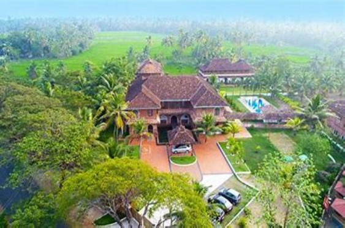
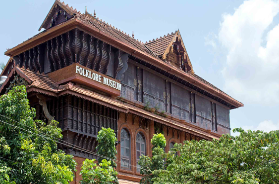
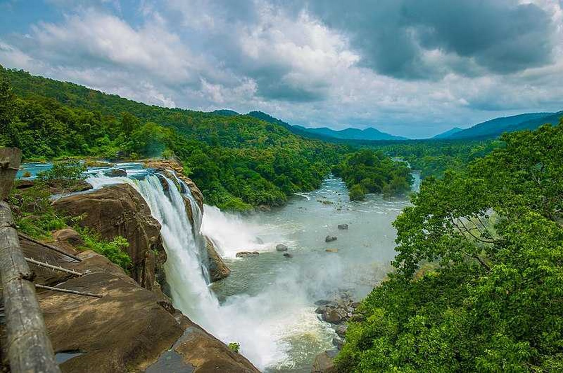

Kumarakom

Kumarakom is a serene village nestled along the shores of Vembanad Lake in the state of Kerala, India. Renowned for its picturesque backwaters, lush greenery, and abundant birdlife, Kumarakom is a popular destination for nature lovers, birdwatchers, and those seeking a tranquil retreat.
The village is situated near the city of Kottayam and is easily accessible by road, rail, and waterways. Its idyllic location amidst the backwaters of Kerala offers visitors a chance to unwind amidst the serene beauty of nature.
One of the main attractions in Kumarakom is the Vembanad Lake, which is the largest lake in Kerala and serves as the focal point of the village. Visitors can explore the backwaters by taking a houseboat cruise, offering a unique opportunity to experience the scenic beauty of the region while floating along the tranquil waters.
Kumarakom is also famous for its bird sanctuary, which is spread across 14 acres and is home to a wide variety of avian species, including migratory birds like Siberian cranes, herons, egrets, and kingfishers. Birdwatchers flock to the sanctuary to catch a glimpse of these feathered wonders amidst the lush greenery and serene surroundings.
Apart from its natural attractions, Kumarakom also offers visitors a chance to experience the rich cultural heritage of Kerala. Traditional Kerala cuisine, including mouthwatering dishes like appam, stew, and fish curry, can be savored at local eateries and restaurants.
Accommodation options in Kumarakom range from luxury resorts and heritage hotels to budget homestays, ensuring that visitors can find a comfortable stay that suits their preferences and budget.
Overall, Kumarakom is a haven for nature lovers and offers a perfect blend of natural beauty, cultural richness, and tranquility, making it an ideal destination for a peaceful getaway in Kerala.
Location
Kerala Folklore Theatre & Museum

The Kerala Folklore Theatre & Museum in Kochi celebrates the state's vibrant cultural heritage with its vast collection of artifacts, costumes, and musical instruments. Visitors can witness captivating performances of traditional dance forms like Kathakali and Mohiniyattam. It's a fascinating destination for immersing oneself in Kerala's rich folklore and artistic traditions.
months :The Kerala Folklore Theatre & Museum is open year-round, so you can visit anytime based on your travel plans.The Kerala Folklore Theatre & Museum, located in Kochi, Kerala, India, is a cultural institution dedicated to preserving and promoting the rich heritage of Kerala's traditional arts, folklore, and cultural practices. Established in 2009, the museum aims to showcase the diverse cultural tapestry of Kerala through its extensive collection of artifacts, exhibits, performances, and interactive experiences.
The museum features various galleries and displays that highlight different aspects of Kerala's folklore, including its indigenous art forms, rituals, customs, costumes, musical traditions, and architectural styles. Visitors can explore exhibits showcasing traditional dance forms like Kathakali, Mohiniyattam, and Theyyam, as well as martial arts like Kalaripayattu. The museum also houses a collection of antique artifacts, including musical instruments, costumes, masks, puppets, utensils, and handicrafts, providing insights into Kerala's rich cultural heritage.
Location
Arthirampally

Athirappilly Falls, located in Athirappilly Panchayat in Thrissur district of Kerala, is one of the largest waterfalls in India. Surrounded by lush greenery and forests, it's a popular tourist destination offering breathtaking views and opportunities for nature walks and photography. The waterfall cascades down from a height of 80 feet and is especially spectacular during the monsoon season.
months:the best time to visit Athirappilly Falls is from September to January. Arthirampally, also known as Athirappilly, is a village located in the Thrissur district of Kerala, India. It is renowned for the majestic Athirappilly Falls, one of the largest waterfalls in India. The Athirappilly Falls is part of the Chalakudy River and is situated amidst lush greenery and tropical forests.
Athirappilly Falls cascades from a height of approximately 80 feet, creating a breathtaking spectacle as the water plunges into the pool below. The surrounding area is rich in biodiversity and is home to a variety of flora and fauna, making it a popular destination for nature lovers and wildlife enthusiasts.
Location